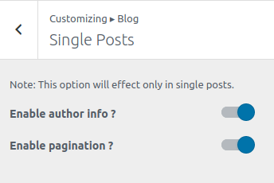

To work on this option, go to Catmandu Pro -> Theme Customizer
Blog options allows you to manage the options in blogs, single, pagination and archive pages.

Blog/Archive page
- Post Structure - Sort the
Faatured Image,Title,MetaandContentby just simple drag and drop. - Archive Column: - Manage the column layout of the archive and blog page. There are 4 columns layout options
- Enable Date
- Enable Author
- Enable Tag
- Enable Category
- Enable Comment
- Read more text - Input the read more text for the excerpt on the blog or archive pages.
- Read more length - Input the excerpt length to be displayed.

Single Posts
This works only on single posts.
- Enable author info ?
- Enable pagination ?

Pagination
- Select the type of pagination namely:
Numeric,Load More Button,Load More on Scroll,Legacy Old/New - Pagination Alignment - Wheather to align the pagination in
LeftorCenterorRight